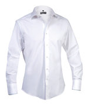
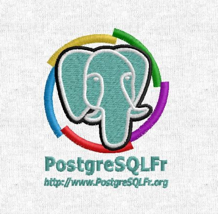
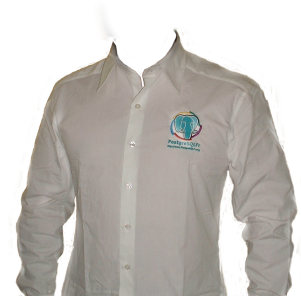

«Elles sont belles mes chemises PostgreSQLFr !»
Par Jean-Paul Argudo le lundi 8 janvier 2007, 21:19 - Vie de l'association - Lien permanent
L'association PostgreSQLFr tiendra un stand à Solutions Linux 2007, du côté du village associatif.
Nous aimerions cette année vous offrir pas mal de goodies, en plus de notre traditionnelle vente de tshirt. Cette année nous aurions aimé aussi vous proposer une chemise (tailles XL, L ou M), avec à la place de la poche avant, notre logo brodé aux couleurs de l'association (l'éléphant bleu classique de PostgreSQL, entouré de la roue de la francophonie, qui est le logo de l'association depuis ses débuts).
Voici la chemise en question :

Seulement voilà: la chemise a un coût de production relativement élevé, bien trop élevé pour que nous puissions en faire produire toute une série pour la proposer à la vente. Cela serait à coup sûr la mort de notre trésorerie... D'autant que la chemise sera chère, puisque rare (produite en petite quantité).
Alors nous nous sommes dits que si vous étiez assez nombreux, nous pourrions obtenir un rabais conséquent. En fait, cela va consister à de la pré-vente. À ce jour, nous n'attendons de votre part qu'un engagement écrit dans un e.mail. Cela nous permettra juste de savoir combien de personnes seraient intéressées...
Sachez cependant que tant que vous ne serez pas plus de 10 personnes, le prix de départ sera à 50 Euros TTC.... Oui nous aussi nous trouvons cela cher. Mais si nous sommes assez nombreux, le prix peut baisser de manière importante !
Tenté par l'aventure? Cliquez-ici ou alors envoyez un e.mailequipe@postgresqlfr.org avec en sujet "chemise". N'oubliez pas de préciser votre prénom, nom, ville et quantité souhaitée. Enfin, précisez si vous souhaitez retirer la chemise sur le stand PostgreSQLFr à Solutions Linux 2007 ou si vous attendez qu'on vous l'envoie par la poste (moyennant quelques euros supplémentaires).
Enfin, si vous vous sentez l'âme d'un généreux donateur c'est par là. Si vous souhaitez contacter les membres de l'association pour devenir sponsor officiel de l'association, n'hésitez pas à nous envoyer aussi un e.mail!
À tous un grand merci!
NB: merci au télé-achat pour l'idée :-)
Édition :
Par Jean-Paul ARGUDO
« La production est lancée! ;-)
Voici un aperçu de la broderie qu'on trouvera sur le coeur. Il s'agit du logo de l'Association PostgreSQLFr :

Attention, il s'agit bien d'un aperçu de la broderie c'est à dire que la broderie aura cet aspect, mais le tissus que l'on voit sur la > photo n'est pas celui de la chemise. La chemise est telle que sur la photo dans l'article: 100% cotton, 120 g/m².
Voici ce que ça donne sur la chemise finale :

Tout est conforme aux descriptions, le travail est soigné et de qualité! »